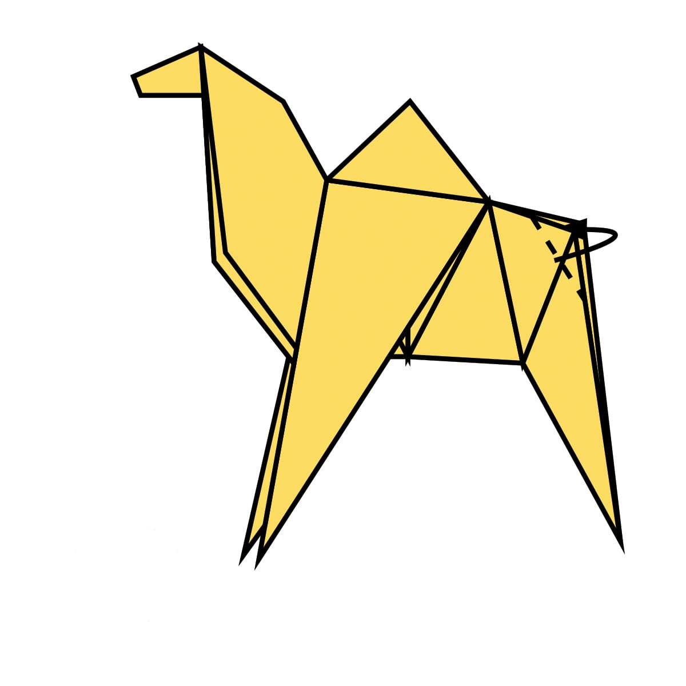

👇Steps to make a camel (Steps 1-19)👇
- Fold the paper in half.
- Fold the paper in half again.
- Open the top flap of paper over to the right.
- Squash Fold this flap down.
- Turn the paper over.
- Open the top flap of paper over to the left and Squash Fold it down.
- Fold and Unfold the sides and the top along the dotted lines. You’ll use these creases in the next step.
- Open up the top layer of paper and fold it up using the crease from the previous step.
- Fold in both sides along the existing creases making a Petal Fold.
- Turn the paper over.
- Repeat steps 7-9 on this side.
- Fold both sides to the centre along the dotted lines. Then repeat on the other side.
- Inside Reverse Fold up both sides of the paper just like in a paper crane.
- Reverse Fold the back part down to make the back legs.
- Fold the top flap of paper down and repeat on the other side to make the front legs.
- Reverse Fold the tip down to make the head.
- Inside Reverse Fold the tip of the head.
- Fold the back of the leg inside the model along the dotted line. Repeat on the other side.
- The completed camel